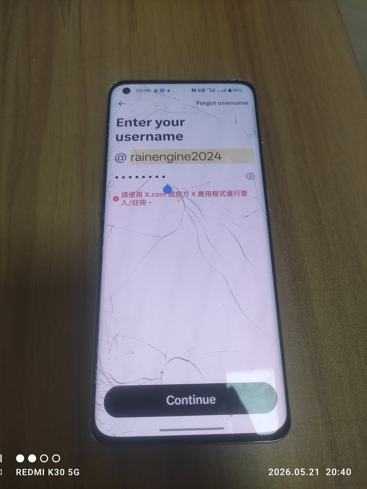

@RainEngine2024 在别人的手机上用piko加passkey登录，导出登录态文件，卸载一次应用（避免ak被提前刷掉）到这手机里导入。


总结下方便后人：《登录piko方法》用proton pass浏览器插件在网页版上保存通行密钥，在手机上登录，这是我折腾出来比较靠谱的登录piko的方法了，也适用于官方端error attestation denied。注意添加多个账号时不会直接弹密钥选择框，输邮箱就行。注意只能是proton pass哦，因为它不验证包的签名。 https://t.co/PScmKufEB2